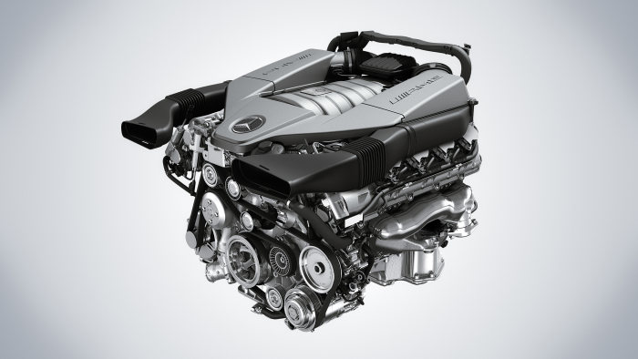

mesin yang kencang
Mesin yang mutakhir, selain halus, juga dapat melaju kencang tanpa getaran. Terutama untuk mobil mobil tipe tertentu, dengan kekuatan laju juga menghasilkan citra yang anggun, dengan suara mesin yang tidak menderu sewaktu dipacu.
